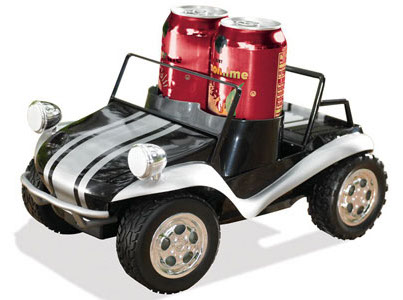

Final Project Ideas
This week's assignment was, in addition to designing this website and creating an About page, coming up with a couple of final project ideas. Initially—using a combination of creativity, memories of past difficulties, suggestions from friends and family, and ChatGPT—I thought of a bunch of different possibilities. Many of these are listed below:
- a drone;
- some sort of wearable (like jewelry, or a belt, or a strap) that can track some personal information (location, steps, heart rate, or whether one's push-up form is good or not);
- a door opener that works with face recognition (or maybe just a numerical code or bluetooth);
- a digital clock;
- a calculator;
- a robotic vehicle (to carry a drink, that is gesture controlled, or to clean);
- a speaker;
- a mini-piano;
- a radio;
- an interactive piece of art built with LEDs
- a smart mirror (with some sort of inner display, camera, LEDs and other features);
- a robotic arm.
I ended up narrowing down the list to the following:
- a wearable that can detect whether one's push-up form is good or not;
- a robotic vehicle (to carry a drink, or to clean);
- a mini-piano.
Below I go into more detail about what each of these projects would aim to achieve and what the end result might look like.
Wearable for Push-Up Form Correction
I am not the biggest exercise junkie, but I've recently started to do push-ups. They are a good, simple, effective exercise, and I enjoy doing them. But push-ups are only effective in so far as one does them correctly. And doing them correctly means having good form. But it's hard to know whether or not one's form is good. Even with a mirror, it can be difficult to look without compromising the form itself. And without a mirror one is quite literally blind.
Good push up form.
The idea for this final project would be to design something that can help me make sure my push-up form is good. This would probably be a wearable that attaches to parts of the body relevant to push up form and tracks their orientation. Some analysis/math would then probably need to be done to determine whether or not the form is good or not. And finally the message would need to be communicated somehow to the user. I was thinking a tone, but it could also be a light (or an electric shock! muahahahaha).
I currently don't have a good idea about what this would look like or how it would work. It needs a lot more brainstorming, and a perfect solution would likely be difficult to build. But even an imperfect solution would be interesting to create.
Robotic Vehicle
Many people in the past have made some kind of robotic vehicle, usually remote controlled. This sounds like a doable project on which I can build by adding multiple features. There are two ideas I have for the purpose of the robot.
The first possibility is for it to be a cleaning robot, some sort of amateur roomba. The easiest idea would be to create a way to stick swifer pads or some other kind of dust collecting material on the bottom of the robot. Then the robot would be remote controlled and therefore one could clean an area from the comfort of one's bed. There are some things here that could be interesting problems to address. For instance, how would it deal with corners? How much pressure would the cleaning surface apply on the floor? Should that pressure (or the angle of the surface) be static or manipulable?
I am imagining a much less advanced and pretty version of this masterpiece.
The second possibility, which is slightly more interesting, is to build a robot that can carry drinks (and/or food!). I often have to bring some sort of drink to my girlfriend from one room to the other. If I could just have a little robot that I can remote control and move from one place to the other to take drinks or other things to her. I would also strive to program the robot to automate its movement and make it easier to control it. For instance, I would try to program it to return to me by following the same directions I inputted from some starting point (something akin to one of Bobby's projects). And if I could make it learn certain common paths so that I don't even have to control it from one point to another, that would be even better.
I am going for somewhere in between these two beauties.
Mini-Piano
At least two past students have completed final projects that created some form of mini-piano (though usually more a mini-keyboard. One made the keyboard to help players learn major and minor scales. Another made it as part of a MIDI Board. The reason I am interested in making a mini-piano is less for learning to play or for making whole songs, but moreso to be able to have it on my desk and be able to spontaneously reconstruct melodies I randomly hear in music or TV or movies. I find myself having to do this sometimes on the computer, where it is by no means efficient.
Drawing of what the mini-piano might look like.
So all I am looking for is a small keyboard/piano with two octaves in which I can play simple melodies and reconstruct them from what I hear. This would either be two octaves long (with 24 keys) or 1 octave long (12 keys) but with a button to be able to transpose all keys by one octave (perhaps two buttons, one for transposing the keys up and another for transposing them down). It would also have a sustain button. Something I would be very interested in working on, which I believe none of the past versions did, is to make keys pressure sensitive, so that the sound depends on the pressure applied to the keys. I would also want to make the entire piano self-sufficient (other than perhaps the power-source), so that I don't need to connect the piano to my computer and open up some special software for it to work. At the very least, if I had to connect it to my computer, it should only be for the speakers. Finally, I would be most excited in making the piano as portable as possible, and one thought I have to do this is making it flexible. Perhaps I could make it with silicone or another similar material, to make something akin to a foldable, silicone keyboard.
A silicone, foldable keyboard. I would aspire to create a piano equivalent of this.